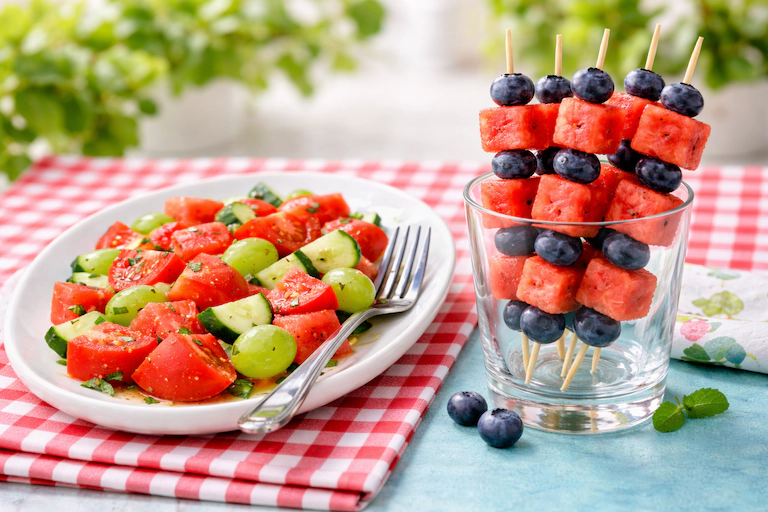

Watermelon Salad With Grapes And Citrus

Watermelon Salad with Grapes and Citrus Recipe
This watermelon and grape salad recipe yields a healthy,
easy summer dessert with a new, fresh, citrusy taste that will keep you coming back for more.
You can serve it right away, although refrigeration heightens the flavors and crisps the fruit.
Ingredients
- 4 cups coarsely chopped seedless watermelon
- 4 cups seedless red grapes, halved
- 2 tablespoons grated lemon zest
- 2 tablespoons grated lime zest
Steps
- Combine watermelon and green grapes in a large bowl.
- toss in lemon zest and lime zest until evenly dispersed
- Cover the bowl with plastic wrap
- Chill in the refrigerator, about 1 hour.
Home